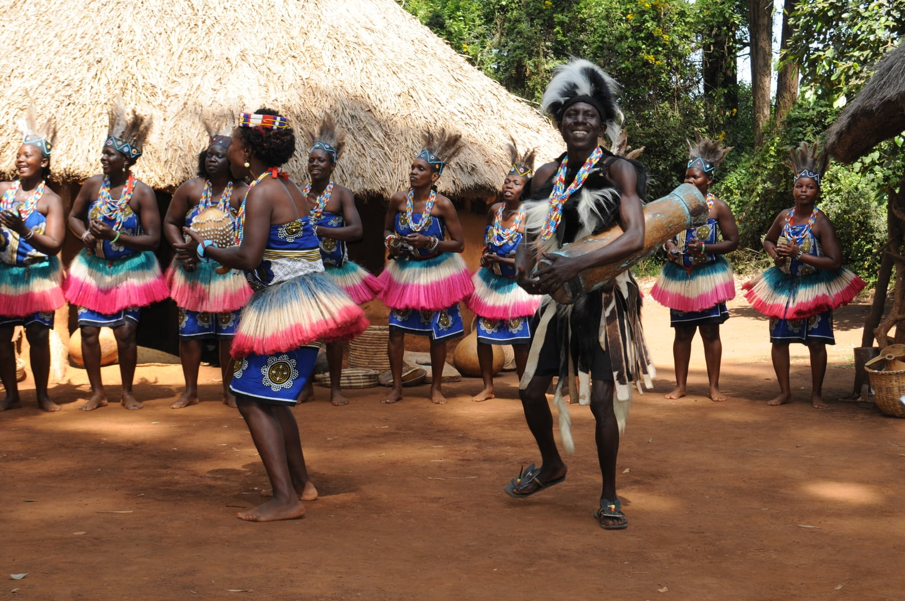

Experience Diversity of Kenya Authentic Music and Dance
Bomas of Kenya
Preserving Kenya's Rich & Diverse Cultures

The Bomas Harambee Dancers are the country’s national dance company par excellence,
proudly representing the beauty and diversity of Kenya’s music and dance traditions since 1973.
Local and international visitors can experience the delightful sounds and movements of Kenya in
our daily cultural performances and/or add a note of culture to their events by hiring the dance
troupe for an outside performance.
The troupe’s repertoire consists of over 50 dances from different ethnic communities.
With live percussion, string and wind instruments, and diverse, authentic and energetic dancing,
BomasHarambee Dancers will take you on an enchanting journey through Kenya.